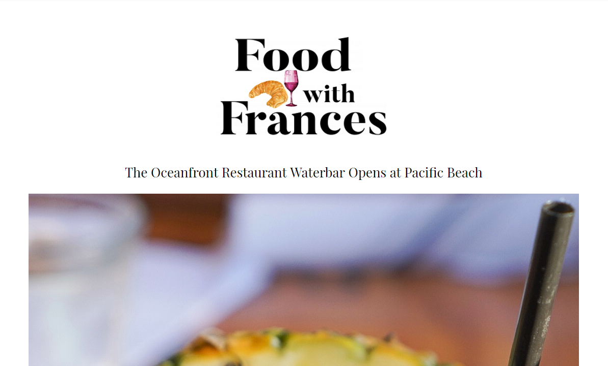
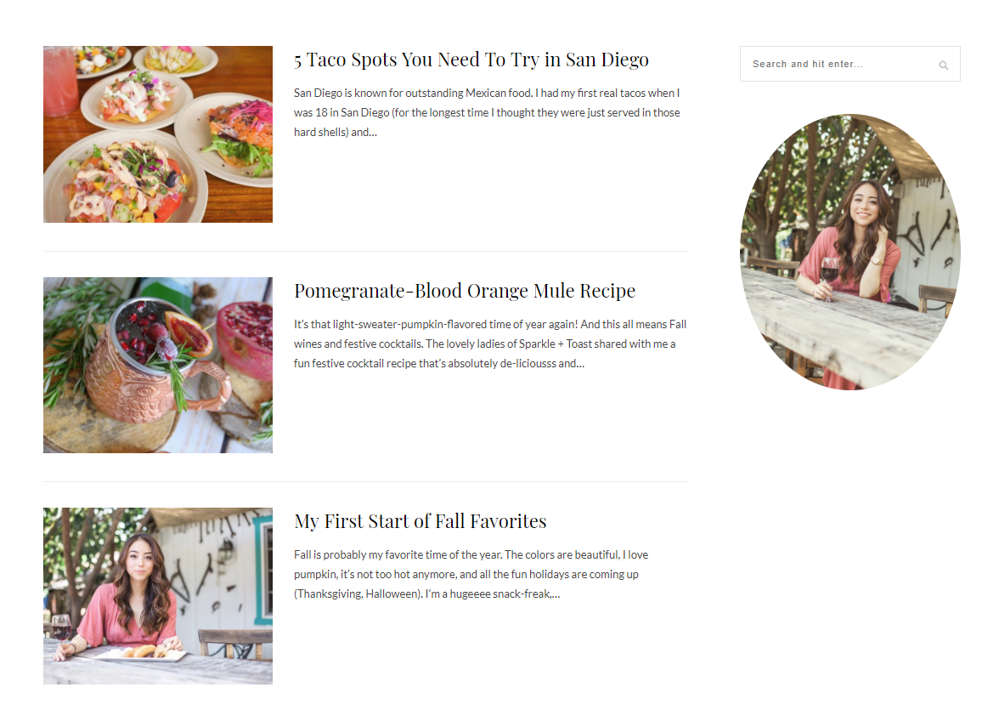
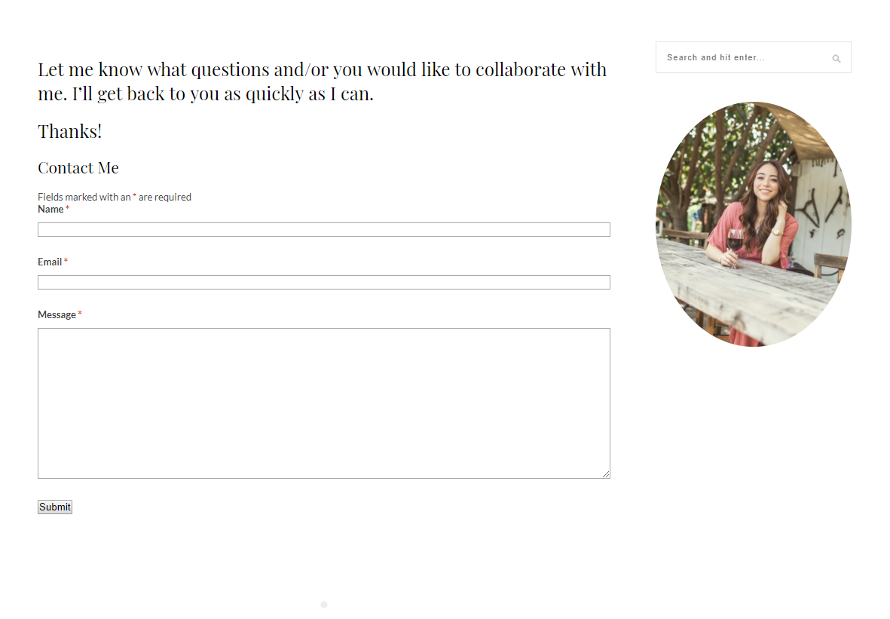
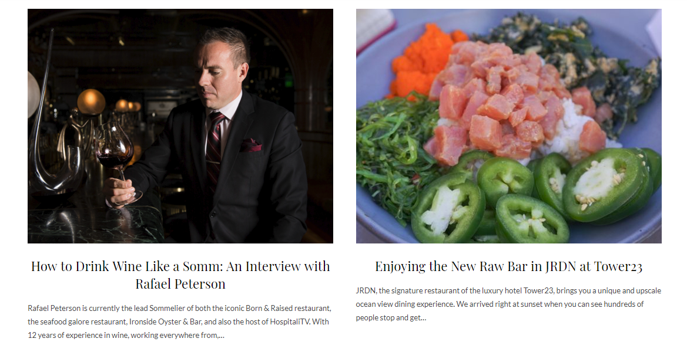

<section>
    <div class="container"> 
      <div class="card-header-work rounded">
          <h1 class="display-4-purple">Food With Frances</h1>
          <p class="card-text">Wordpress, Consultating</p>
          <p class="card-text text-purple">With this project, I am working with a San Diego based food blogger to help develop and maintain her wordpress blog.</p>
          
          <div class='spacer'></div>
          
          <div class='spacer'></div>
          
          <div class='spacer'></div>
          
          <div class='spacer'></div>
      </div>
  </div>
</section>

